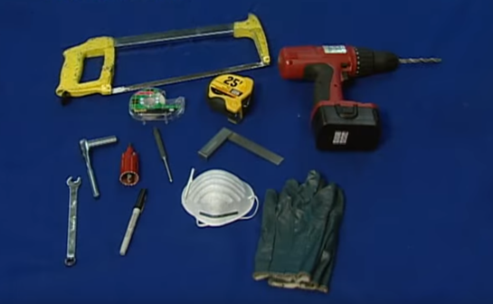
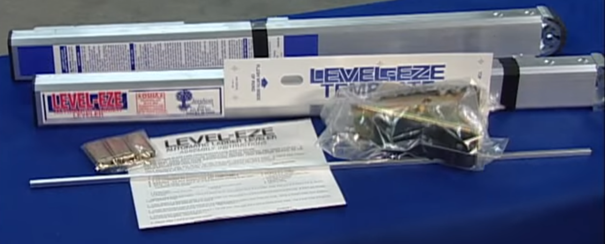
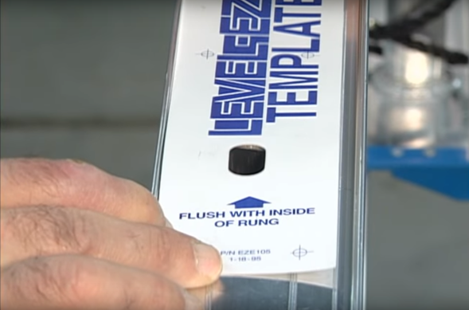
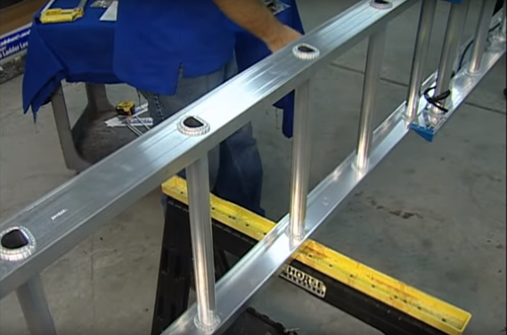
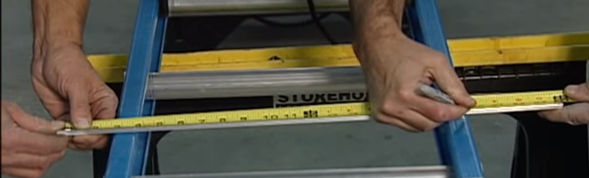
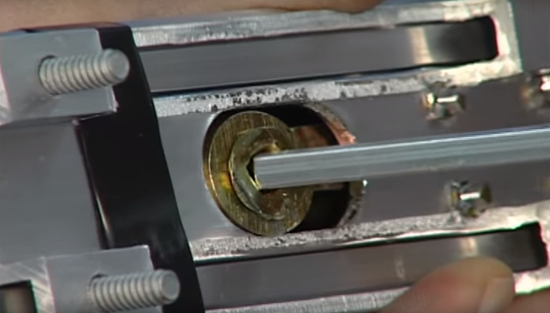
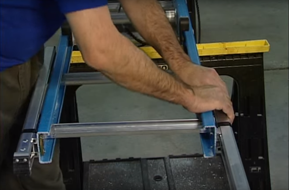
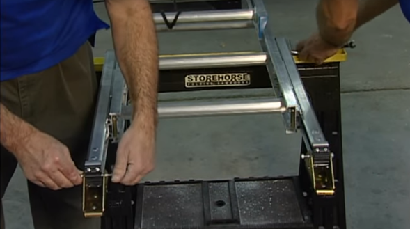
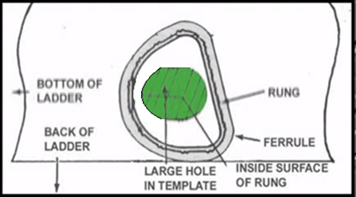
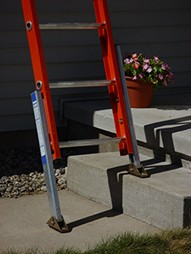

| VERSIÓN | FECHA | DESCRIPCIÓN | ELABORÓ | REVISÓ | APROBÓ |
|---|---|---|---|---|---|
| V2 | 01/04/2026 | Creación del documento | Samuel Ramos | Lili Forero | Lili Forero |
Establecer el procedimiento para la correcta instalación de los niveladores Level-Eze, garantizando seguridad y eficiencia en el proceso.
Aplica para todo el personal técnico encargado de la instalación de niveladores en campo.

1. Ubicación de la escalera: Coloque la escalera en posición horizontal sobre una superficie estable, garantizando inmovilidad durante el proceso.
2. Configuración inicial: En escaleras extensibles, desplace la sección superior entre 60 cm y 80 cm para liberar la base.
3. Inspección: Verifique integridad estructural de los rieles y ausencia de deformaciones.

Figura 1: Kit inicial con todos los componentes del sistema Level-Eze.
4. Referencia: Ubique el segundo peldaño desde la base de la escalera.
5. Instalación de plantilla: Posicione la plantilla alineada con el borde posterior del riel.
6. Alineación crítica: Verifique que el orificio guía coincida con el eje del peldaño.
7. Marcación: Marque los seis (6) puntos de perforación por cada riel.

Figura 2: Centrado correcto de la plantilla respecto al eje del peldaño.
8. Perforación: Realice las perforaciones con broca de 3/8" manteniendo perpendicularidad respecto al riel.
9. Limpieza: Retire rebabas o residuos metálicos.

Figura 3: Proceso de perforación de los rieles según plantilla.
10. Medición: Mida el ancho total entre rieles de la escalera.
11. Ajuste: Sume 65 mm a la medida obtenida.
12. Corte: Corte la varilla de aluminio garantizando perpendicularidad y acabado limpio.

Figura 4: Medición del barraje para ajuste del eje de transmisión.
13. Inserción del eje: Introduzca la varilla cuadrada en el engranaje interno del primer nivelador.
14. Paso del eje: Desplace el eje a través del peldaño hacia el lado opuesto.
15. Acople: Instale el segundo nivelador asegurando acople mecánico correcto.
16. Sincronización: Verifique que un nivelador quede extendido y el otro retraído.

Figura 5: Inserción del eje en el engranaje del nivelador.

Figura 6: Ensamblaje simétrico de los niveladores en ambos rieles.
17. Instalación: Ubique las placas de soporte y alinee con las perforaciones.
18. Ensamble: Inserte tornillería y ajuste las tuercas hexagonales.
19. Torque: Aplique ajuste uniforme hasta lograr fijación firme de los componentes, evitando deformación del riel o sobreesfuerzo en la tornillería
20. Orientación: Instale la zapata con la placa dentada orientada hacia la parte posterior de la escalera.
21. Ensamble: Inserte el perno de hombro y asegure con contratuerca.
22. Verificación: Confirme libre movimiento de la zapata.

Figura 7: Instalación física de zapatas en los niveladores.

Figura 8: Diagrama técnico de montaje (perno de hombro y contratuerca).
23. Verificación funcional: Accione manualmente el sistema comprobando movimiento inverso.
24. Prueba en campo: Ubique la escalera en superficie irregular y valide estabilidad.
25. Inspección final: Confirme ausencia de holguras o interferencias.

Figura 9: Prueba operativa del sistema en condición real de desnivel.
A continuación, se presenta un video de apoyo que ilustra el proceso de instalación del sistema Level-Eze en condiciones reales: